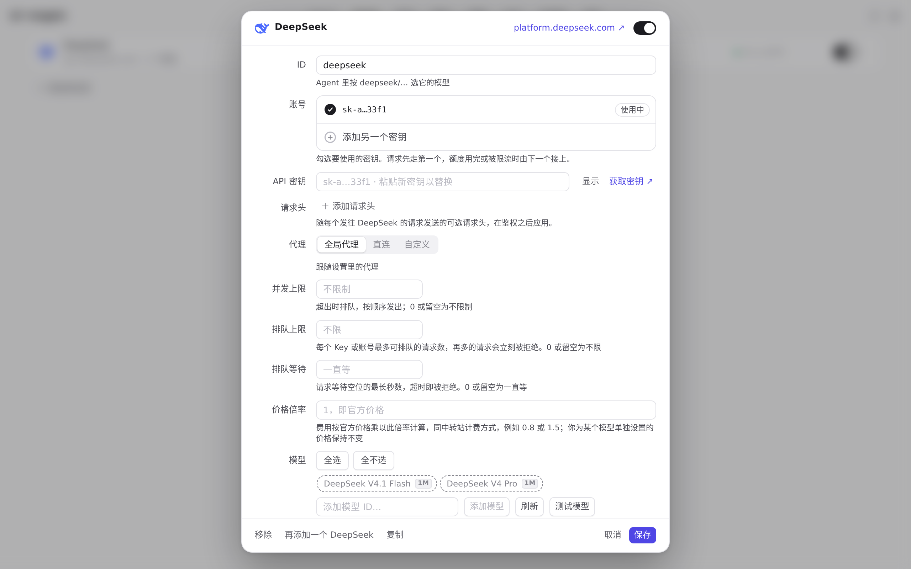
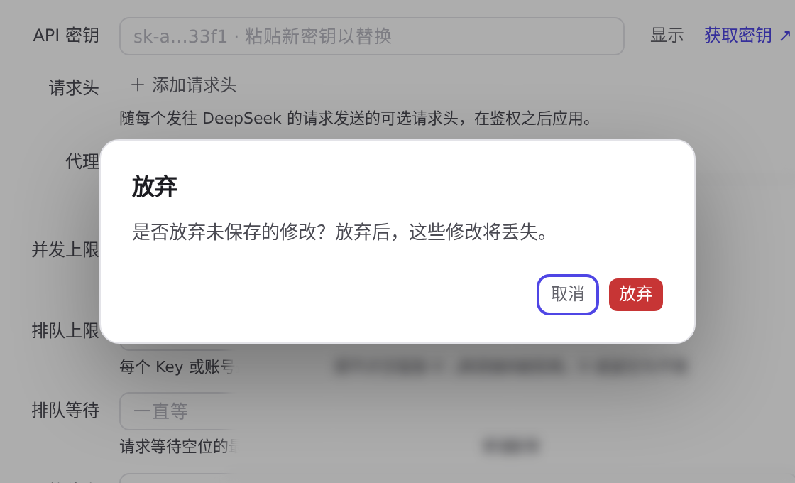
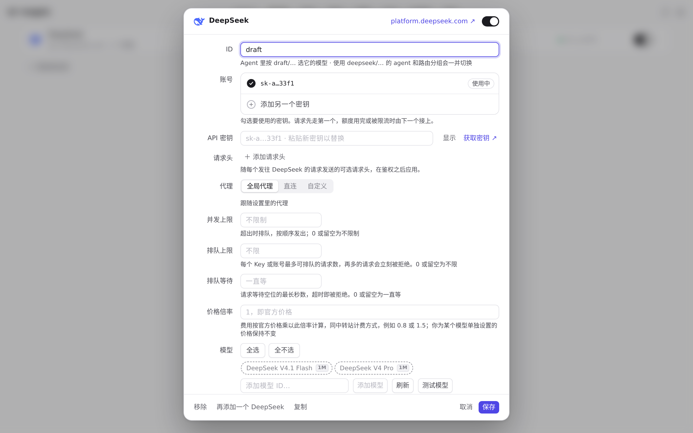
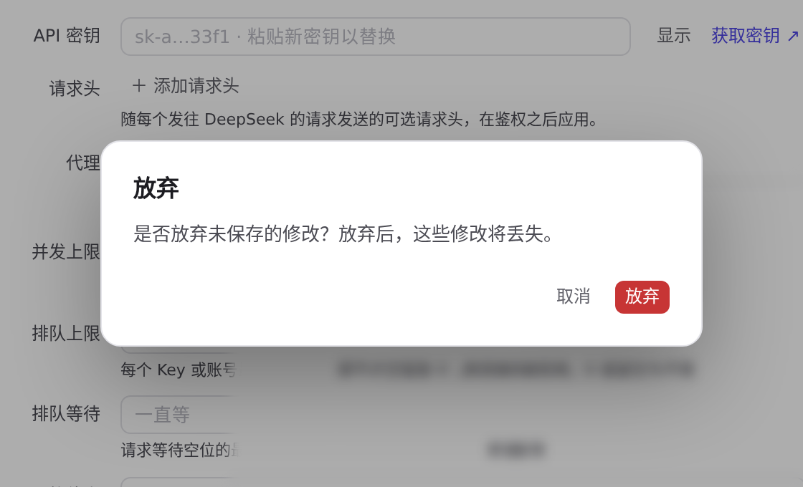
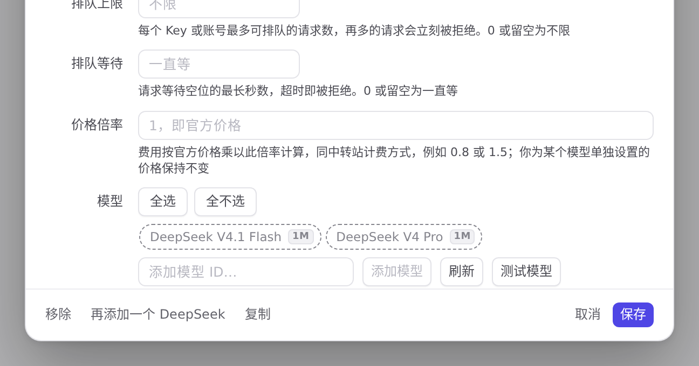

#820 界面预览
commit 186e4d6 · 回到 PR · 这个 diff 给界面加了两类保护：关闭有未保存改动的供应商/路由/资源库编辑器时先弹出应用内的「放弃修改」确认框；删除供应商、账号密钥、路由组、插件及其中间件选项、资源库条目等操作不再立即生效，而是先弹确认框（并统一了 .action-confirm 弹窗样式、对话框语义和焦点圈定）。此外导航项加上 aria-current，并在首屏之前由新的 layout.js/theme.js 应用模式、平台、主题与字号。
红线是鼠标走过的轨迹，红色圆环是一次点击；底部文字是这一步在做什么。空格暂停，← → 逐段查看。
 关闭有未保存改动的供应商编辑器 · 供应商页：沙盒里只有一个 DeepSeek
关闭有未保存改动的供应商编辑器 · 供应商页：沙盒里只有一个 DeepSeek

关闭有未保存改动的供应商编辑器 · 刚打开的编辑器，还没有改动
 关闭有未保存改动的供应商编辑器 · 编辑器里的 ID 字段已被改动，尚未保存
关闭有未保存改动的供应商编辑器 · 编辑器里的 ID 字段已被改动，尚未保存

关闭有未保存改动的供应商编辑器 · 按 Esc 关闭已改动的编辑器：确认框浮在编辑器之上

关闭有未保存改动的供应商编辑器 · 「取消」之后，编辑器还开着，ID 字段里的改动还在

关闭有未保存改动的供应商编辑器 · 点「取消」时的确认框
 关闭有未保存改动的供应商编辑器 · 放弃改动之后关闭编辑器的供应商页
关闭有未保存改动的供应商编辑器 · 放弃改动之后关闭编辑器的供应商页
 移除供应商先确认 · 编辑器底部：保存、取消与移除
移除供应商先确认 · 编辑器底部：保存、取消与移除

移除供应商先确认 · 编辑器底部一排：移除、再添加一个 DeepSeek、复制、取消、保存
 移除供应商先确认 · 未改动的编辑器关闭后的供应商页
移除供应商先确认 · 未改动的编辑器关闭后的供应商页